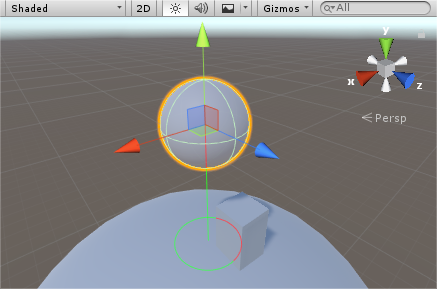

Handles.zTest
public static Rendering.CompareFunction zTest;
Description 描述
zTest of the handles.
Default value is Always.

This anchor shows the first downwards collider intersection. Depth pass lines appears green, depth fail, red.
To use this example, attach this script to the object you wish to display the anchor :
using UnityEngine; using UnityEditor;
[ExecuteInEditMode] public class SampleAnchor : MonoBehaviour { void OnDrawGizmosSelected() { Ray ray = new Ray(transform.position, Vector3.down); RaycastHit hit; if (Physics.Raycast(ray, out hit)) { Handles.color = Color.green; Handles.zTest = UnityEngine.Rendering.CompareFunction.LessEqual; Handles.DrawLine(transform.position, hit.point); Handles.DrawWireDisc(hit.point, hit.normal, 0.5f);
Handles.color = Color.red; Handles.zTest = UnityEngine.Rendering.CompareFunction.Greater; Handles.DrawLine(transform.position, hit.point); Handles.DrawWireDisc(hit.point, hit.normal, 0.5f); } } }